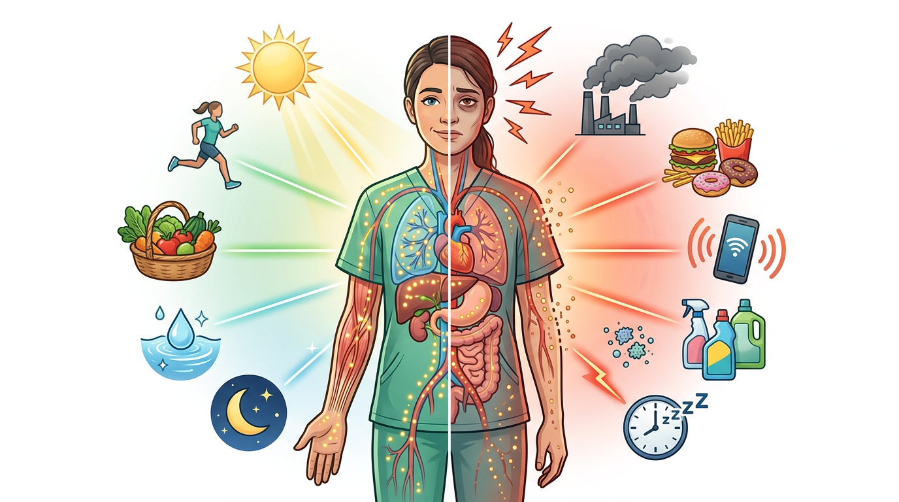
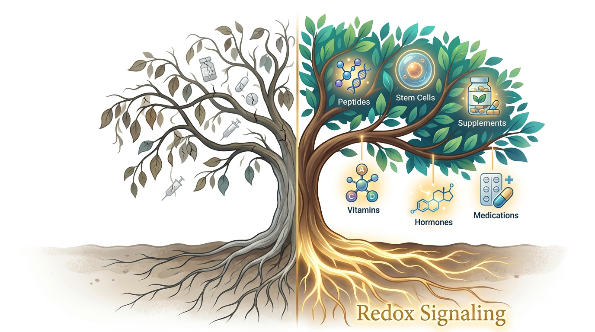
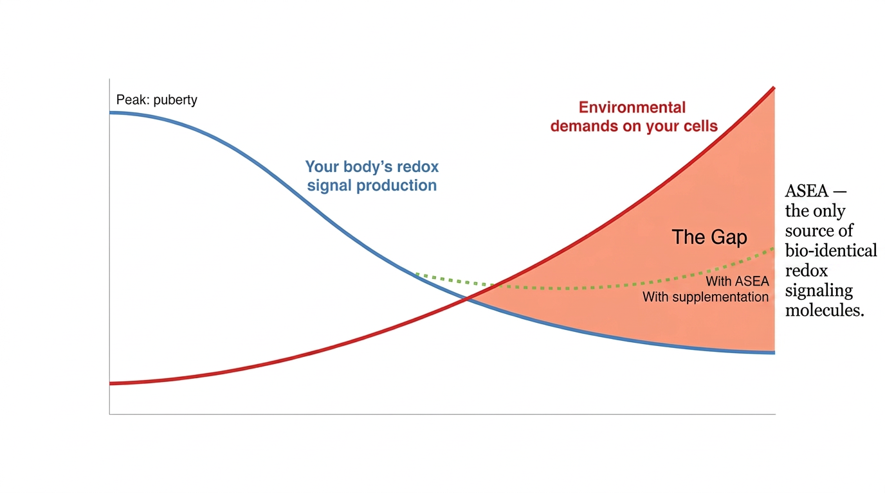
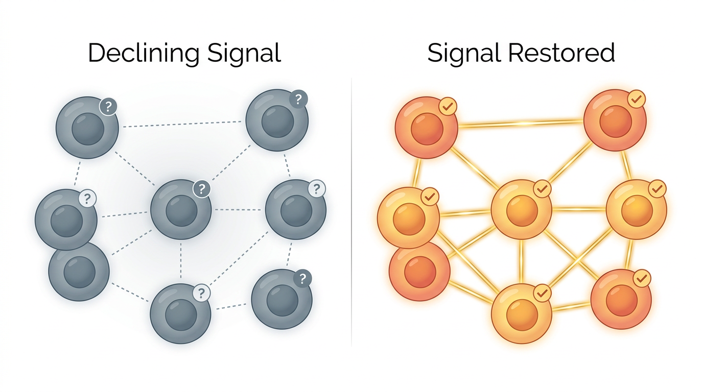

Someone who cares about you sent you this page. Give it five minutes.
It was a messenger network.
While rival kingdoms poured their gold into bigger swords and thicker armor, Sun Tzu invested in something his enemies thought was trivial: communication between units. Smoke signals. Flag systems. Drum sequences that could relay a command across ten thousand soldiers in under sixty seconds.
His opponents had larger armies. Better terrain. More resources.
They lost anyway.
Because the army that communicates fastest... wins. Every time.
Here is the part that changes everything you think you know about your own health:
That is exactly how your body operates.
Right now, as you read this sentence, your body is conducting a conversation so vast it makes the entire internet look like two kids with tin cans and string.
Trillions of messages. Every single second.
Not hundreds. Not millions. Trillions.
Your cells are talking to each other at a speed and scale that no technology on Earth has come close to replicating. They are coordinating the replacement of roughly 20 billion cells today alone — about a billion every hour — and every single replacement requires a sequence of signals so precise that if even a small percentage of them misfire, you feel it.
You feel it as fatigue. As slow recovery. As that vague sense that your body just does not bounce back the way it used to.

Your body was designed for natural stress. Modern life delivers something very different.
The molecules carrying these messages are called redox signaling molecules. And here is what makes them so remarkable:
They are deeper than hormones.
Deeper than neurotransmitters.
They are the most fundamental signaling molecules ever discovered in the human body — the base layer beneath every other communication system your body runs. Hormones need them. Your immune function needs them. Your cells cannot even begin the process of repair and replacement without them.
Think of them as the operating system underneath every app your body is trying to run.

Everything you do for your health depends on this foundation.
This communication system — this extraordinary, trillion-message-per-second network keeping you alive and functioning — has a supply problem.
It is not a disease. It is not a deficiency you caused. It is simply arithmetic.
Starting right around puberty, your body's production of these signaling molecules begins to decline. Roughly one percent per year. Every year. Without exception.
One percent does not sound like much. But it compounds.
And here is what makes this arithmetic so cruel: modern life is not getting easier on your cells. It is getting harder. The environmental stressors your body faces today — the processed food, the disrupted sleep, the sheer pace of everything — all of it demands more from your cellular communication system.
More signals needed. Fewer signals produced.
The gap widens every single year. And your body has no built-in mechanism to reverse the trend.

The gap widens every year. ASEA is the only source of bio-identical redox signaling molecules.
This is why you can eat well, exercise, take high-quality supplements, do everything "right" — and still feel like something fundamental is off. The troops are not failing. The signal is. The 911 call is not getting through.
For decades, researchers believed it was impossible to create stable redox signaling molecules outside the human body. The molecules are extraordinarily reactive — they break down in seconds when isolated. The technology to stabilize them simply did not exist.
Until it did.
A team of scientists developed a process that creates shelf-stable redox signaling molecules that are bio-identical to the ones your own cells produce. Not a drug. Not a synthetic compound. Not a vitamin, mineral, or herbal extract. The same signaling molecules your body already makes — in a form your cells recognize on contact.
That breakthrough became ASEA.
It is in a category of one. No other product on earth delivers stabilized redox signaling molecules. No competitor has replicated the process. Twenty-plus patents protect the technology. It has been available in over 33 countries for more than 15 years. Zero toxicity findings.
Here is what the research shows:
A peer-reviewed gene expression study demonstrated that ASEA affected genes in five distinct signaling pathways — the kind of cellular-level impact that caught the attention of researchers who are very difficult to impress.
Then, in 2026, the Aspen Clinical Study went further. A randomized, double-blind, placebo-controlled trial — the gold standard. Over 16 weeks, participants showed an 89 percent reduction in a key inflammatory marker and a 14 percent increase in the body's own glutathione production.
Glutathione is often called the body's master antioxidant. Most supplements try to deliver it from outside. ASEA did not deliver glutathione. It supported the body's own increased production of it — a fundamentally different approach. Your cells already know how to make it. These results suggest that restoring the redox signal helps your body produce more of what it already knows how to make.
No adverse effects. Third-party certified by BioAgilytix Labs. FDA-registered production facility. NSF-certified manufacturing.

Declining signal vs. restored signal. Your cells already know what to do — when they can communicate.
Your body already knows how to heal. It just lost the signal. ASEA replenishes it.
The technology behind ASEA originated at Medical Discoveries, Inc. — a Utah-based biopharmaceutical company that spent over a decade and millions of dollars developing applications from electrolyzed saline. Their research was conducted at institutions including Dana-Farber Cancer Institute and Albany Medical College. They held multiple U.S. and international patents. This was SEC-filed, patent-protected, peer-reviewed biotech.
When funding ran out, a man named Verdis Norton entered the picture.
Norton had spent decades in the corporate world at the highest levels. He served as head of worldwide strategy for Kraft Foods — at the time, a $36 billion company. After retiring from Kraft, he ran a biotech division for one of the largest protein producers in America, giving him direct experience with laboratories, research scientists, and the mechanics of bringing science to market.
Norton was initially brought in as a strategy consultant. But when he dug into the underlying research, he recognized something the original team had not fully grasped — that the real significance of this technology was not as a pharmaceutical drug. It was as a foundational cellular signal.
He assembled a team of investors and acquired the patents and research.
Shortly after the acquisition, a pharmaceutical company approached with an offer to buy the technology outright. The terms were clear: they would acquire it, and public access to the product would end.
Norton had already begun sharing the product within a small circle. Dozens of people were showing up at his home asking for more.
"I'm not doing that. We're going to go a different way with this."
— Verdis Norton to his son TylerThat decision became ASEA. Today the company operates a 70,000-square-foot production facility, holds over 20 patents, is available in more than 33 countries, and has sold millions of bottles worldwide.
Someone you know sent you this page. That matters.
They did not post it on social media hoping for clicks. They did not blast it to a mailing list. They chose you, specifically, because they thought you were the kind of person who would actually read it with an open mind.
And the fact that you have read this far says something about you.
Most people, when they encounter something outside the familiar categories — outside the vitamin aisle, outside the doctor's office, outside the headlines — close the tab. Not because they could not understand it. Because they will not look. The current medical system has a protocol for everything, and most people are comfortable staying inside that protocol. That is not a criticism. It is simply how most people operate.
You are still here.
Think about it. Germ theory was ridiculed for decades before it saved millions of lives. Gut health was dismissed as quackery until the microbiome became one of the biggest stories in medicine. The pattern repeats itself across every major advance in human health — a small group recognized it early, the mainstream caught up years later, and everyone who waited said the same thing: "Why didn't anyone tell me sooner?"
Someone is telling you. Right now. On this page.
Redox signaling is still in that early window. The published research is growing. The clinical data is building. The mechanism is well understood by the scientists who study it. But it has not reached mainstream awareness yet — and honestly, that is part of why you are reading this here instead of hearing about it from your doctor.
The person who sent you this page saw something in you. They thought you were the kind of person who would rather look at the evidence and decide for yourself than wait for a headline to tell you it is safe to be curious.
Curiosity is not gullibility. It is the opposite. It is the refusal to accept that what you already know is all there is.
My background is corporate finance and accounting. Several decades of it. The job was never really about numbers — it was about understanding the story behind them and asking better questions.
That made me a natural skeptic.
When I was first introduced to ASEA, skepticism was my default. The only reason I gave it a second look was the person who brought it to me — someone I respected, someone I was already doing business with, someone who had nothing to gain by risking that relationship on something that didn't hold up.
Even then, my expectations were modest at best.
But over the following months, things shifted. Sleep improved. Energy became more consistent. For someone who had stopped expecting things to change, that was enough to pay attention.
I don't push this on anyone. Some people aren't interested, and that's fine. But others are — and I want to make sure the people who would benefit from this information have the chance to find it.
What you do with it is entirely your decision.
You have read something today that most people will not encounter for years. You understand something about your own biology that is not taught in schools, not covered in annual checkups, and not mentioned in the vitamin aisle.
You are standing at a quiet crossroads. No drama. No countdown timer. Just a choice.
You close this page. Life goes on exactly as it has. Your body continues its one-percent-per-year decline in these signaling molecules, same as everyone else. You will not think about this again until, perhaps, you start feeling the gap in ways that are harder to ignore.
You stay curious. You take the next small step — not a leap, just a step. You reach out to the person who sent you this page and ask the questions that are on your mind.
Here is what I want you to consider.
Imagine it is five years from now. You took that step. You started supporting your body's cellular communication at a level most people do not even know exists. And over those five years — while your peers continued declining at one percent per year — you were replenishing what time was taking away.
Five years of compounding difference.
Think about what that looks like. Think about how you move. How you sleep. How you recover. How you feel on an ordinary Tuesday afternoon when everyone else is reaching for their third coffee.
Now think about the version of you that closed the tab.
Same five years. Same arithmetic. But going in the other direction.
The person who shared this page with you took this step. They are not asking you to believe what they believe. They are asking you to be curious enough to have a conversation.
That is all this is. A conversation with someone who cares about you, about something that might matter more than either of you realize yet.
Talk to the person who sent you here. They are expecting your questions. And they will be glad you asked.
Reach out to the person who sent you here. Or explore on your own.
P.S. The Aspen Study data — 89% reduction in a key inflammatory marker, 14% increase in your body's own glutathione — came from a double-blind, placebo-controlled trial. This is not marketing language. It is clinical measurement. The person who sent you here can walk you through what it means.
P.P.S. Your body replaces roughly a billion cells every hour. Every one of those replacements depends on signaling molecules to coordinate the process. The question is not whether cellular communication matters. The question is whether yours is keeping up.
P.P.P.S. You are reading this because someone you trust thought you should. That alone is worth five more minutes of your time. Reach out to them. Ask the questions on your mind. See what they say.